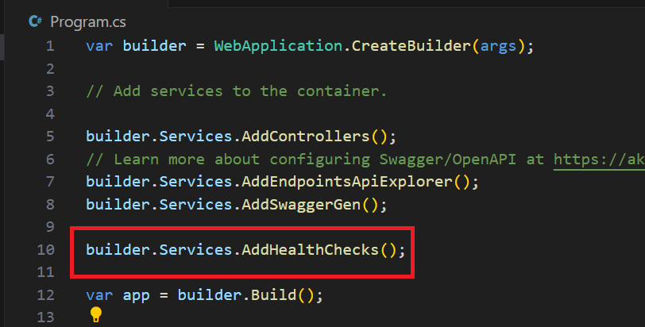
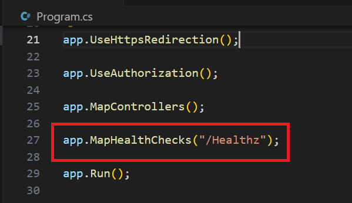
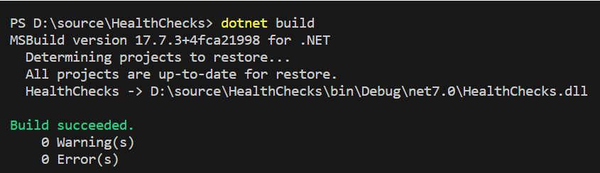
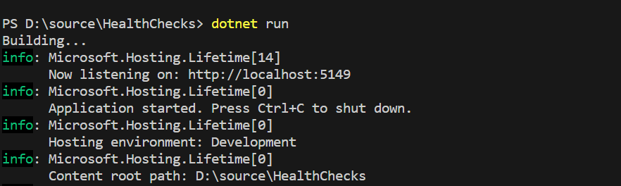
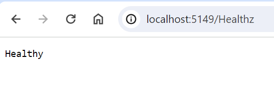

In this article we will understand about the health of a web application. Then we will learn about health checks for a web application and also why we need them and how to implement them in asp.net core web application
A web application or a web api generally uses database for persistence. The database operations involving complex queries take more time to complete. It is common to use caching mechanism to improve performance of the application. Most of the applications are moving towards micro-service architecture, it is often the case for an application to depend on other application or a service. Applications have started using cloud components and services extensively so it is usual for a web application to depend on azure services and components.
As shown in the below diagram, application uses or depends on many external components
Application being up and running is not sufficient to say that an application is healthy. For the application to perform all its operations, it should be able to access all its external resources. So for the application to be called as healthy, all its external dependencies should be up and running and should be accessible to the application.
Health checks not only involve checking whether the application is up and running but also includes to check whether all its external dependencies are up and running and they are accessible. So even when the application is up and running cannot be called healthy if it is not able to access the database, or the cloud component or any other external dependent resource.
ASP.NET core offers health checks middleware and various libraries for checking health of different resources. The first step in health check is to see whether the app is up and running. It is also called liveness check. It is effortless to add a liveness check for an asp.net core application.
Let's add a liveness check for an asp.net core web api application.





The health check end point returned "Healthy" saying that the application is up and running and ready to take up requests. In this article we have discussed about health check of an application. We have seen how easy it is to implement liveness check for an asp.net core web application. In the next article we will discuss about how to check if all the external dependencies of the application are up and running.